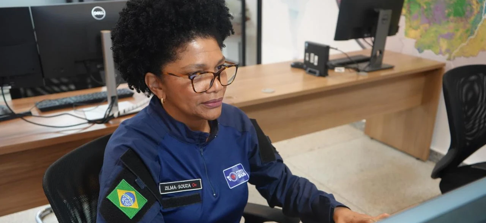
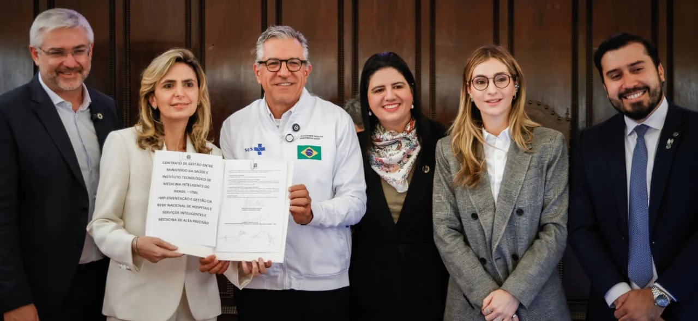

Pesquisa clínica · Publicado hoje, 24 de outubro
Arquivo · Edição 002 · 24 de outubro de 2026Edição preservada, com fotografias reais com créditos. Ler a edição atual →
Primeira página · Edição 002
24 de outubro · Atualização da noiteNoticiário de 19 a 24 de outubro de 2026Fotografias reais · Fontes identificadas
Saúde e clima · 22.10 · Em destaque
Porto Velho recebe base da Força Nacional do SUS
Estrutura regional prepara resposta a emergências na Amazônia Ocidental.

Gustavo da Rosa/AgSUS · Fonte e crédito ↗ · Condições de uso
O Ministério da Saúde instalou em 22 de outubro uma base regional da Força Nacional do SUS em Porto Velho. A unidade funciona no Centro de Clima e Saúde da Fiocruz Rondônia, em um contexto de estiagem e emergência decretada no município.
A localização pretende facilitar a cobertura de Rondônia, Acre e comunidades de difícil acesso, utilizando conexões rodoviárias, aéreas e fluviais. Com a instalação, a rede passa a contar com cinco bases regionais em funcionamento no país. O anúncio descreve capacidade de preparação e mobilização, não apresenta uma avaliação de impacto assistencial. Acompanhar tempo de resposta, alcance territorial e continuidade do cuidado será importante para avaliar seus resultados.
Ciência & cuidado
O que aconteceu. O que ainda precisa ser demonstrado.Formação e carreira · 23.10
Mais Médicos abre 224 vagas imediatas para especialistas
Nova chamada também forma cadastro reserva; inscrições vão até 29 de outubro.
A segunda chamada do terceiro ciclo do Mais Médicos Especialistas oferece 224 vagas imediatas e 4.350 posições em cadastro reserva, segundo reportagem da Agência Brasil publicada em 23 de outubro. As inscrições seguem até o dia 29 pelo portal da Universidade Aberta do SUS.
Leia a matéria e suas fontes →Sistemas de saúde · 20.10
Contrato prevê expansão de UTIs conectadas no SUS
Metas de integração digital ainda precisam ser avaliadas na prática.

Rafael Nascimento/MS · Fonte e crédito ↗ · Condições de uso
O Ministério da Saúde assinou em 20 de outubro contrato de gestão com o Instituto Tecnológico de Medicina Inteligente do Brasil. O acordo apoia uma rede de serviços conectados e a implantação de um hospital especializado em emergência, terapia intensiva e neurologia, com início de operação previsto para 2029.
Leia a matéria e suas fontes →Epidemiologia · 23.10
Mais escolaridade, menos diagnósticos de demência
Reforma britânica permite investigar efeitos de uma política educacional décadas depois.
Uma reforma britânica que elevou de 15 para 16 anos a idade mínima para deixar a escola ofereceu uma oportunidade de estudar educação e demência. Pesquisadores compararam pessoas nascidas próximas ao limite que determinava quem precisava permanecer mais tempo em sala de aula.
Leia a matéria e suas fontes →A edição muda.
O rigor permanece.
Esta segunda edição reorganiza as notícias e as fotografias conforme a pauta. A data de cada fonte aparece junto à matéria: conteúdo desta semana não é apresentado como publicado hoje. A seleção é manual, sem atualização automática. Conheça as fontes e os critérios →
Nesta edição
24 de outubro de 2026Nenhuma matéria encontrada. Tente outro termo ou volte à primeira página.